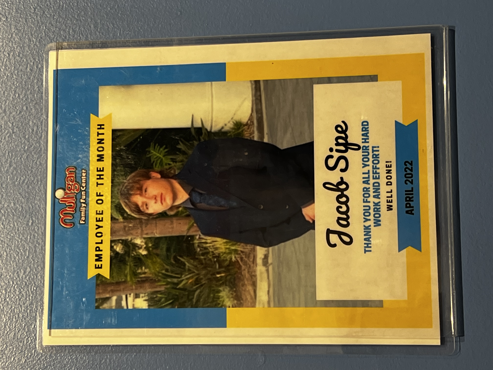
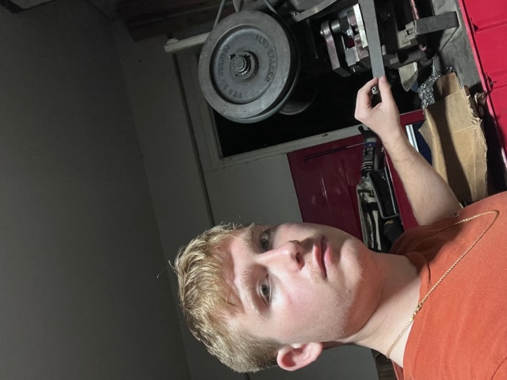
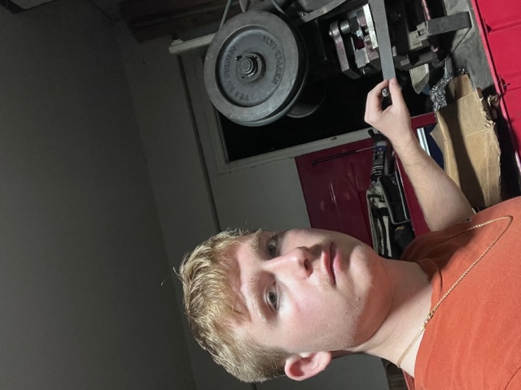

Jacob Sipe
My name is Jacob Sipe. I am a first-year student at University of California, Riverside. I am looking to get a bachelor’s in mechanical engineering with a background in design and manufacturing by the time I graduate in 2026. Throughout high school, I took multiple classes specifically in the field of design and manufacturing. In those classes, I learned how to use computer software to design objects that could be 3D printed, engraved out of a material, or shaved by a waterjet. During my time in those classes I learned how to use such programs as Onshape, CorelDraw, and the Autodesk suite, specifically AutoCAD and Fusion 360. Over the last six years I have familiarized myself with electronics and computers, starting with a basic Computer Literacy class when I was in middle school. I then pursued a coding class, and a basic level robotics class. Throughout high school I took high level English and Mathematics courses. In my sophomore year I took AP English Language and Composition and passed the AP exam with a score of 5, the perfect score. In my senior year, I took AP English Literature and Composition and passed with a 4. Mathematics wise, I took advanced math courses from my 8th grade to my junior year, and then took an IB level Math Applications course my senior year.
Professionally, I have only held two jobs. I started working for my father’s company, Andy’s Brake lathe Silencers when I was 10. I would work whenever he needed me to, but not as much to be a “full job.” When the COVID-19 Pandemic hit my town, I decided to help out more with my father’s job with all of my new free time. I learned how to effectively schedule out my work process and get things done either on time or before the deadline. While working for my father, I learned to use the proper equipment for making our product, as well as the most efficient way to use it. Another thing that working for my father taught me was what a good work ethic is, and what it takes to get a job done. At the moment, I am still helping my father out with his business as a first-year student because not only will I leap at the opportunity for some extra money, but it helps me stay on track with scheduling out my life; balancing work and school to perform as best I can in both aspects of my life. I have applied my work ethic to things such as school, exercise, and self-care/maintenance with great benefit, as a strong work ethic has drastically helped me grow as a person.
I officially work at “Muligan Family Fun Center,” a “park” where people can play miniature golf, arcade games, etc. While not the most challenging job, I have seniority there and have often had to take charge of what the people under me were doing in order to get a task done, whether it be sending people to different parts of the building or getting everyone in line so we could close on time and get home early.
Experience
Manufacturer/Manager
• Cut rubber for all spring silencers
• Loaded all spring silencers
• Prepared them for shipping
Park Attendant
• Responsible for all attractions around the park
• Trusted by supervisors with higher-level tasks
•Learned how to handle customers
Volunteer
• Prepared the venue for customers
• Brought customers their food and drink
• Helped close the venue after the event
Education
UC Riverside
Portfolio




